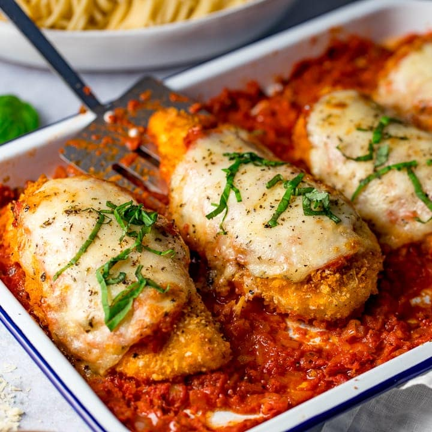
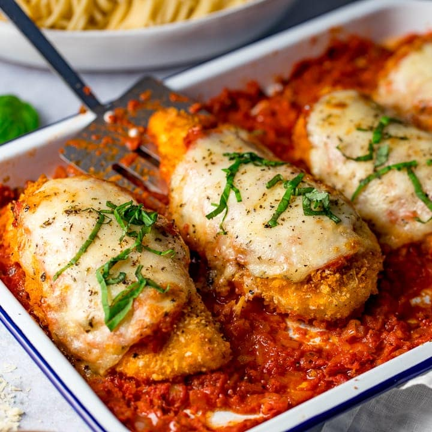

CHICKEN PARMESAN
5stars (8 ratings) // 8 comments
THE VERY best tasty Pasta bolognese!
So rich, so hearty, so perfect.
 

Chicken parmesan, or chicken parmigiana, is a dish that consists of breaded chicken breast covered in
omato sauce and mozzarella, parmesan, or provolone cheese. A quantity of ham or bacon is sometimes added
The dish originated in the Italian diaspora in the United States during the early 20th century.
CHICKEN PARMESAN
Ingredients
4 skinless, boneless chicken breast halves
Salt and freshly ground black pepper to taste
2 large eggs
1 cup panko bread crumbs, or more as needed
¾ cup grated Parmesan cheese, divided
2 tablespoons all-purpose flour, or more if needed
½ cup olive oil for frying, or as needed
½ cup prepared tomato sauce
¼ cup fresh mozzarella, cut into small cubes
¼ cup chopped fresh basil
½ cup grated provolone cheese
2 teaspoons olive oil
Instructions
- Preheat an oven to 450 degrees F (230 degrees C).
- Place chicken breasts between two sheets of heavy plastic (resealable freezer bags work well) on a solid, level surface. Firmly pound chicken with the smooth side of a meat mallet to a thickness of 1/2-inch.
- Season chicken thoroughly with salt and pepper. Using a sifter or strainer; sprinkle flour over chicken breasts, evenly coating both sides
- Beat eggs in a shallow bowl and set aside.
- Mix bread crumbs and 1/2 cup Parmesan cheese in a separate bowl, set aside.
- Dip a flour-coated chicken breast in beaten eggs. Transfer breast to the bread crumb mixture, pressing crumbs into both sides. Repeat for each breast. Let chicken rest for 10 to 15 minutes.
- Heat 1/2 inch olive oil in a large skillet on medium-high heat until it begins to shimmer. Cook chicken in the hot oil until golden, about 2 minutes per side. The chicken will finish cooking in the oven.
- Transfer chicken to a baking dish. Top each breast with 2 tablespoons tomato sauce. Layer each chicken breast with equal amounts of mozzarella cheese, fresh basil, and provolone cheese. Sprinkle remaining Parmesan over top and drizzle each with 1/2 teaspoon olive oil.
- Bake in the preheated oven until cheese is browned and bubbly and chicken breasts are no longer pink in the center, 15 to 20 minutes. An instant-read thermometer inserted into the center should read at least 165 degrees F (74 degrees C).